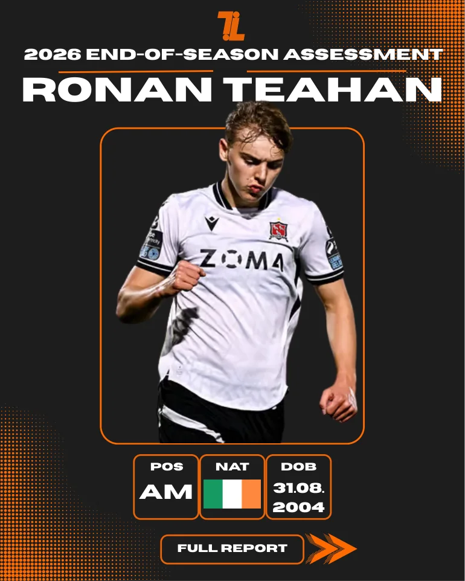

2026 end-of-season assessment · Dundalk
A progressive attacking midfielder.
A report on a mobile left-footed attacker whose ball carrying, intelligent movement and work rate helped him adapt to Premier Division football. Includes a recruitment assessment for English League One and the Scottish Premiership.
Assessment accurate as of 5 November 2026 · 11 pages · Attacking midfield
Read the full report ↘
Original assessment / Complete document
Ronan Teahan: Full Scout Report
The complete original 11-page assessment is embedded below without editing or updating its historical statistics. The information reflects the assessment as of 5 November 2026.
← Back to all scout reports